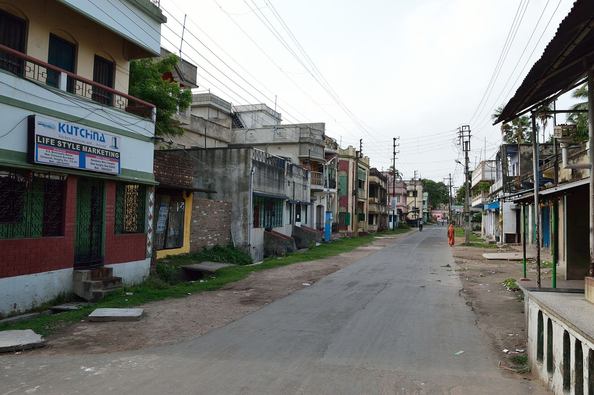
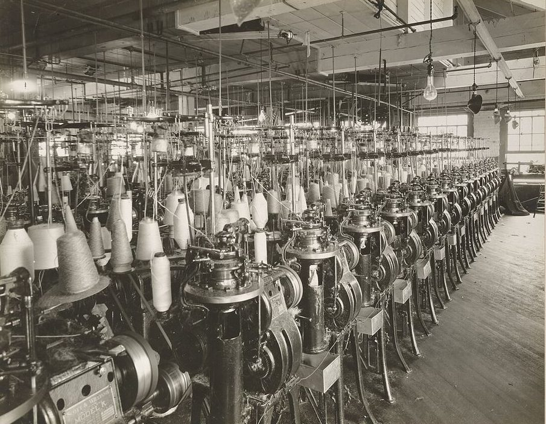

Software shaped around your process.
Leads, quotations, billing, stock and reporting in one system built to match how your team already works — not a rented template you bend the business around.

What we build
A system is only useful if it matches the way work already happens. So we start by watching it — the shared spreadsheet, the WhatsApp group, the register at the counter, the follow-up that lives in one person’s head. We write that process down, you correct it, and then we build software that follows it and quietly removes the steps that existed only because a spreadsheet could not do better. Nobody should have to learn new vocabulary to use their own system.
Most builds cover the same spine: leads and pipelines, quotations and follow-ups, invoices and payment status, stock and purchase orders, and role-based access so an executive sees their own accounts while the owner sees everything. On top of that sits reporting — the four or five numbers someone currently compiles by hand on the first of every month, available at any hour instead.
Your existing data comes with you. We migrate from Excel, from Tally exports, from whatever the last system produced, clean the duplicates and keep a record of what changed. Notifications go out over WhatsApp and email — quotation sent, payment overdue, stock below reorder level — so people stop chasing each other for status. Every record carries an audit trail of who changed what and when, and everything exports to CSV or Excel on demand, because data you cannot get out is data you do not really own.
What’s included
- A written map of how your team works today, agreed and signed off before we build anything
- Leads, pipelines, quotations, invoices and stock — scoped to the parts you will genuinely use, not a feature list
- Role-based access with per-action permissions, so people see and change only what belongs to them
- Migration from your spreadsheets or current system, with a duplicate and consistency check you review first
- WhatsApp and email notifications for the events that matter — new lead, quote sent, payment due, low stock
- Audit trails on every record and one-click export to CSV or Excel from every screen
- Training per role, a short written manual, the source code, the database, and 30 days of fixes after go-live
At a glance
- Platforms
- Web · Tablet · Mobile
- Typical timeline
- 6–10 weeks
- Starting from
- ₹1,50,000 – ₹6,00,000
- You receive
- Code, database, docs
- Support
- 30 days, AMC optional
Three parts of one system.
Most companies need two of these on day one and the third by the second quarter. They are built on the same data, so adding the next one is not a new project.
Sales pipeline
Leads from the website, WhatsApp and walk-ins land in one list, each with an owner and a next action. Stages you name yourself, follow-up reminders that actually fire, quotations generated from your own template, and a recorded reason every time a deal is lost.
Leads, stages, quotations, reminders

Billing & inventory
GST-ready invoices on your own numbering series, payment status against each one, and stock that moves as orders are raised rather than at month end. Purchase orders, reorder levels and a count that no longer needs a Sunday to reconcile.
Invoices, GST, stock, purchase orders

Reporting & roles
Dashboards for the numbers you check weekly — pipeline value, collections due, stock ageing, performance by executive. Each role opens to its own view, every table exports to Excel, and every change is logged with a name and a timestamp.
Dashboards, roles, exports, audit trail
From spreadsheet to go-live.
Working software every fortnight on a test link, starting with the module that hurts most. Your team uses it while it grows, so training is half done by launch.
Why build a CRM instead of subscribing to one?
For plenty of teams a subscription is the right answer, and we will tell you so. Building makes sense when your process is the thing that earns the money and no product matches it, when per-user pricing at your headcount costs more over three years than building once, or when the data has to sit next to billing and stock that a generic CRM will never touch. If an off-the-shelf tool fits, we would rather set that up properly for you than sell you a build you did not need.
Can you move our existing spreadsheets in?
Yes, and it is usually the first thing we do. We take the exports — Excel, CSV, Tally, or a dump from whatever you run now — map the columns to the new records, and run a duplicate and consistency check that you review before anything is loaded. Rows that cannot be matched come back to you as a list to decide on, never quietly dropped. Old files stay untouched so there is always something to compare against.
Who can see what?
You decide, role by role. A common setup gives an executive their own leads and quotations, a manager the team pipeline and approvals, accounts the billing side, and the owner everything including reports and audit logs. Permissions are per action rather than per screen, so a person can view an invoice without being able to edit or delete it, and every change is recorded with a name and a timestamp you can look up later.
What happens after it goes live?
Thirty days of fixes are included — anything that does not behave as scoped, we correct at no cost. After that most clients take an annual support arrangement, typically 12 to 18 per cent of the build cost per year, covering hosting oversight, updates, small changes and a response time we agree in writing. It is optional. The source code, the database and the documentation are yours either way, so another team could pick it up if you ever wanted them to.
Show us the spreadsheet.
Send a note about how the work happens today and where it breaks. You get a reply the same working day and a fixed quote within 48 hours.